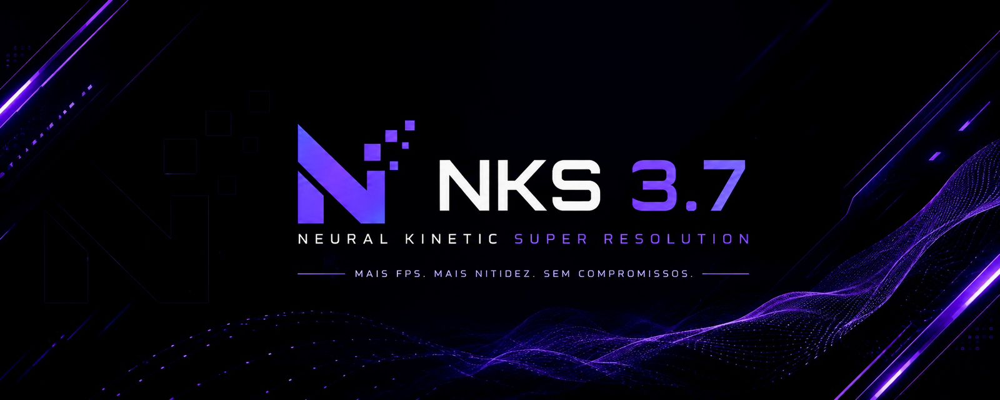

O NKS 3.7 é uma IA avançada de Frame Generation e Upscaling criada pela NIKA GEEKS. Desenvolvido para entregar mais FPS, maior nitidez e menor perda visual, funcionando diretamente via driver para máxima integração e desempenho.

Uma solução de inteligência artificial focada em desempenho extremo, baixa latência e reconstrução avançada de imagem.
O NKS atualmente possui geração de quadros 2X via IA, aumentando drasticamente a fluidez dos jogos compatíveis.
Reconstrução inteligente de imagem com foco em nitidez, estabilidade visual e preservação de detalhes.
O sistema opera em nível de driver, permitindo compatibilidade avançada e baixa latência.
Projetado para entregar mais FPS sem comprometer qualidade visual ou responsividade.
Design moderno inspirado em tecnologias futuristas, mantendo simplicidade e acessibilidade.
Em breve: novos modos de geração, suporte expandido e melhorias de IA.
Criado para elevar o desempenho das GPUs modernas utilizando IA de reconstrução temporal.
Frame Generation
Upscaling Neural
Latência Reduzida
Compatibilidade Moderna
O executável oficial do NKS será disponibilizado futuramente pela NIKA GEEKS. Prepare-se para experimentar uma nova geração de Frame Generation e Super Resolution baseada em IA.
Executável indisponível no momento